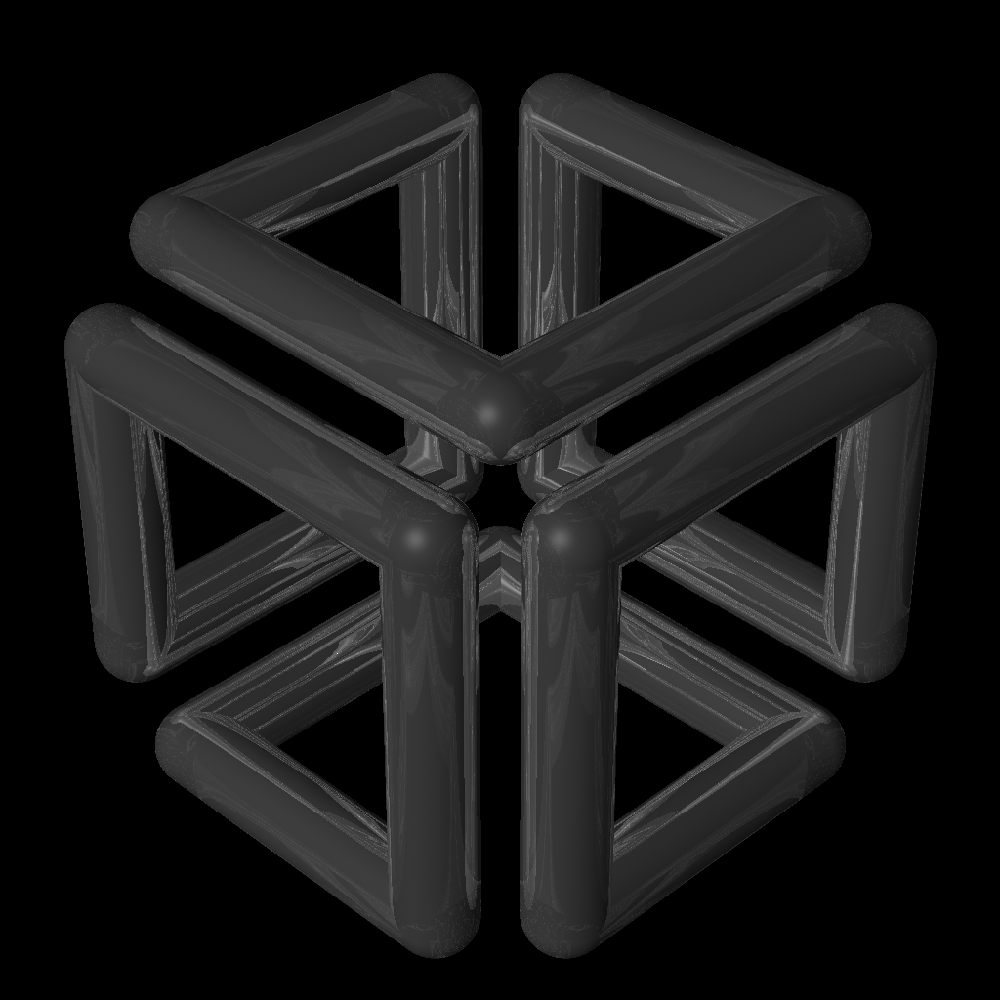

SGI Cube logo modeled and rendered in BRL-CAD:

Included below is an example shell script that uses BRL-CAD tools to procedurally create and render the SGI Cube (tm) logo. The script sets up functions that create spheres (SPHs) and cylinders (RCCs) going back and forth in various directions, creating the corresponding geometry for each of those directions. All of the SPHs and RCCs are then combined via a Constructive Solid Geometry (CSG) union operation and material properties are set on the object. The script then sets the orientation of a view that matches the original SGI logo and renders to a PNG image file.
Scripting MGED
BRL-CAD's solid modeling editor, MGED, will run any non-modal modeling command provided after the name of the geometry database on the command line. The "-c" option tells MGED to run in classic console mode. MGED will also run a series of commands piped in or redirected to it via standard input. This makes scripting MGED in just about any language rather straightforward. While this example uses a shell script, it could have just as easily have been written in another programming language. BRL-CAD provides a C API to most of the geometry creation routines via BRL-CAD's libwdb "write database" library and BRL-CAD's librt ray-trace library.
As some may suspect, it is considerably more efficient to batch multiple MGED commands together via standard input instead of re-invoking MGED for each command. The script shown, however, runs MGED multiple times for each of the various directions merely for the purposes of this simplified example.
Results
As should be evident in the resulting SGI Cube, the rendered cube is pretty close to the original. Setting up lights in the scene and testing out other shader parameters to more exactly match the original SGI cube logo are left as an exercise to the reader. :-)
The Script
#!/bin/sh
# Example script for creating and rendering the SGI Cube logo as BRL-CAD geometry
# Author - Christopher Sean Morrison
# This script is in the public domain.
SGI="`basename $0`"
rm -f $SGI.*
# cube dimensions
i=1000 ; j=800 ; radius=100
# starting position
x=0 ; y=0 ; z=0
# functions to create geometry for each direction of the cube
right ( ) {
old=$x
x=$((old + $2))
mged -c $SGI.g in rcc.$1 rcc $old $y $z $((x - old)) 0 0 $radius
mged -c $SGI.g in sph.$1 sph $x $y $z $radius
}
left ( ) {
old=$x
x=$((old - $2))
mged -c $SGI.g in rcc.$1 rcc $old $y $z $((x - old)) 0 0 $radius
mged -c $SGI.g in sph.$1 sph $x $y $z $radius
}
forward ( ) {
old=$y
y=$((old + $2))
mged -c $SGI.g in rcc.$1 rcc $x $old $z 0 $((y - old)) 0 $radius
mged -c $SGI.g in sph.$1 sph $x $y $z $radius
}
back ( ) {
old=$y
y=$((old - $2))
mged -c $SGI.g in rcc.$1 rcc $x $old $z 0 $((y - old)) 0 $radius
mged -c $SGI.g in sph.$1 sph $x $y $z $radius
}
up ( ) {
old=$z
z=$((old + $2))
mged -c $SGI.g in rcc.$1 rcc $x $y $old 0 0 $((z - old)) $radius
mged -c $SGI.g in sph.$1 sph $x $y $z $radius
}
down ( ) {
old=$z
z=$((old - $2))
mged -c $SGI.g in rcc.$1 rcc $x $y $old 0 0 $((z - old)) $radius
mged -c $SGI.g in sph.$1 sph $x $y $z $radius
}
### CREATE THE CUBE ###
forward 100 $i
left 101 $j
down 102 $i
right 103 $i
up 104 $j
back 105 $i
down 106 $i
forward 107 $j
left 108 $i
back 109 $i
right 110 $j
up 111 $i
left 112 $i
down 113 $j
forward 114 $i
up 115 $i
back 116 $j
right 117 $i
# combine all the primitives together via unions
mged -c $SGI.g g cube.c rcc.* sph.*
# create a region from that combination (make it occupy physical space)
mged -c $SGI.g r cube.r u cube.c
# assign some material properties using a cook-torrence shader
mged -c $SGI.g mater cube.r "cook re=.8 di=1 sp=1 ri=10" 250 250 250 0
### RENDER THE CUBE ###
# pipe in mged commands for setting up and saving the view to a render script
cat <<EOF | mged -c $SGI.g
B cube.r
ae 135 -35 180
set perspective 20
zoom .25
saveview $SGI.rt
EOF
# render the view we saved as a 1024x1024 image
./$SGI.rt -s1024
# convert from raw pix image format to png format
pix-png -s1024 < $SGI.rt.pix > $SGI.png
# display the png image in a framebuffer window
png-fb $SGI.png
# keep the geometry database as sgi.g and the rendering as sgi.png
mv $SGI.g sgi.g
mv $SGI.png sgi.png
# clean up after ourselves
rm -f $SGI.*
This script is available for download from here.
The SGI Cube logo is a registered trademark of SGI.